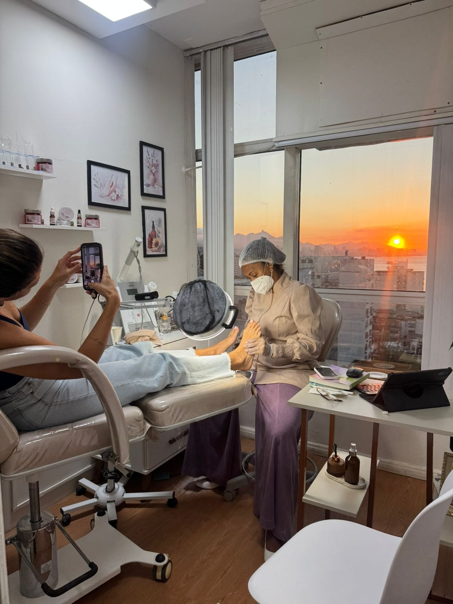
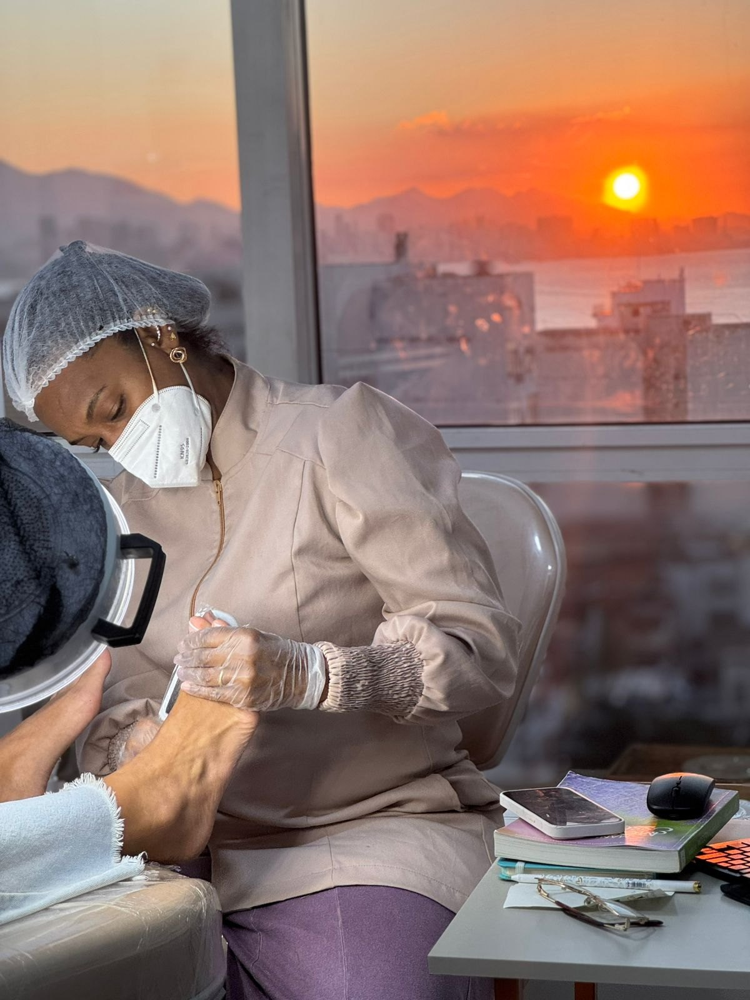
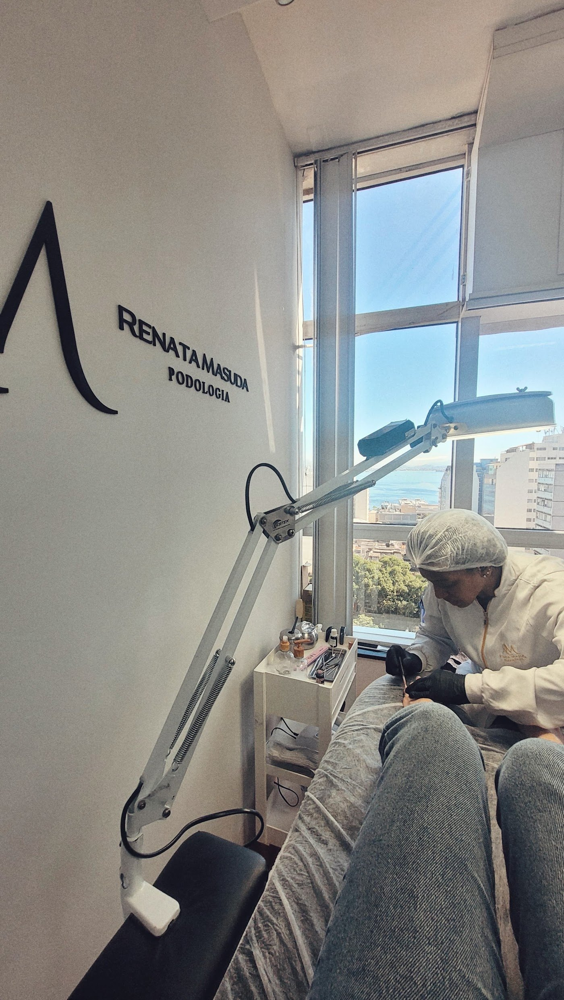
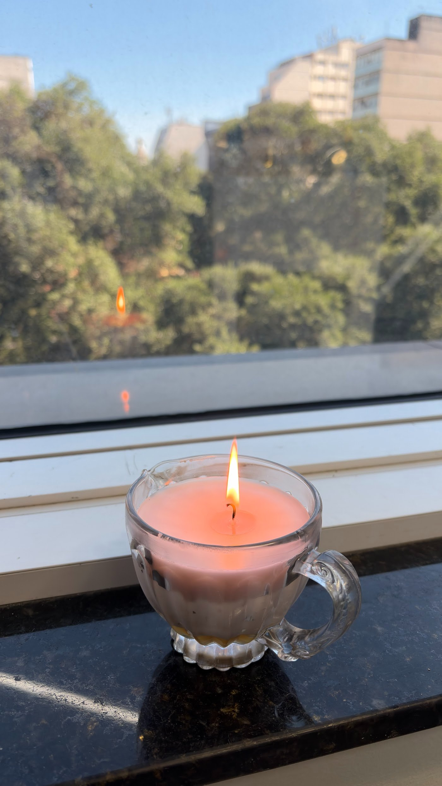
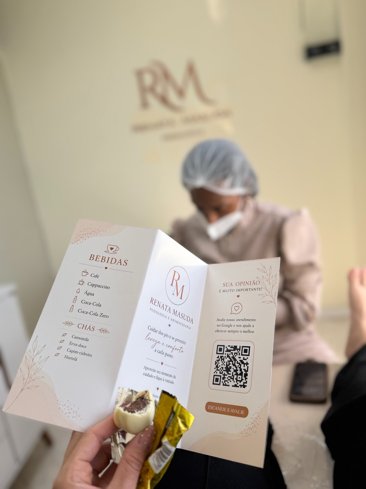
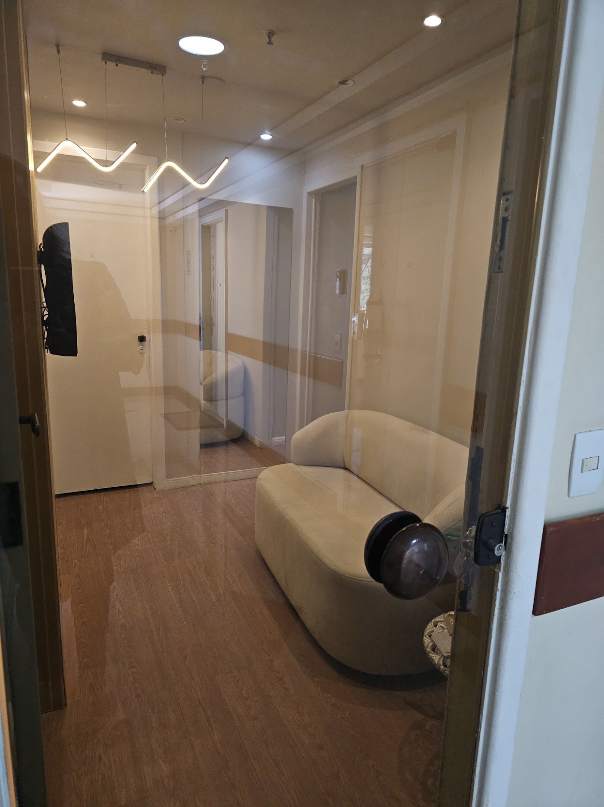

Podologia e aromaterapia com Renata Masuda, no Centro de Niterói. Um atendimento cuidadoso, detalhista e acolhedor, num consultório com vista para o mar.



Você merece um momento só seu!
Renata cuida dos pés de adultos e crianças com técnica, carinho e atenção a cada detalhe. Do corte técnico das unhas ao tratamento de unha encravada, órteses e reconstrução ungueal, cada atendimento é feito com segurança e delicadeza.
Além da podologia, ela trabalha com avaliação postural, chinelos e palmilhas terapêuticas e com a aromaterapia da sua linha Toque Essencial, para que cuidar dos pés seja também um momento de bem-estar.
Corte técnico das unhas, profilaxia e cuidado com a pele, para pés macios e saudáveis.
Tratamento seguro de unhas encravadas, em adultos e também em crianças.
Órteses para unhas que crescem com curvatura, ajudando a devolver o formato natural.
Técnica segura que devolve a estética e a proteção a unhas danificadas.
Tratamento profissional e seguro para verrugas nos pés.
Avaliação postural a partir dos pés, com tecnologia 3D.
Chinelos e palmilhas terapêuticas para mais conforto no dia a dia.
Produtos terapêuticos da linha Toque Essencial, para levar o bem-estar para casa.
No consultório, o atendimento começa antes do procedimento: você escolhe uma bebida no cardápio, relaxa com o aroma das velas e aproveita a vista da janela.
O cappuccino é um dos queridinhos de quem vem.
Camomila, erva-doce, capim-cidreira e hortelã.
Velas e aromas que deixam o ambiente ainda mais acolhedor.
Um consultório aconchegante, com o pôr do sol na janela.



Mande uma mensagem para (21) 99881-8043.
De segunda a sábado, com horários até as 19h na maioria dos dias.
No Edifício Downtown, no Centro de Niterói.
“Renata é simplesmente maravilhosa! Moro em Niterói há pouco tempo e estava procurando uma podóloga de confiança. Felizmente encontrei a melhor! Ela é extremamente cuidadosa, detalhista e caprichosa em cada etapa do atendimento.”
Bárbara Santos“Cuida de nossos pés com mãos de fada. E não é só sobre cuidar dos pés, é sobre autoestima, sobre alto astral, se sentir querida e valorizada. Super indico.”
Patrícia Soares“Minhas unhas estão quase normais com a órtese que ela coloca. Excelente profissional! O Studio tem uma vista maravilhosa para o mar! Cafezinho bem quentinho com biscoitos.”
Janete Salim“A Renata é a melhor podóloga de todas! É uma excelente profissional, muito habilidosa e cuidadosa. Sempre saio com unhas e pés macios e bonitos. Confio e recomendo de olhos fechados!”
Maria Clara Periard“Renata é uma profissional incrível! Me senti segura e ela conseguiu resolver minha necessidade. Meus pés agradecem. Super indico.”
Michelle Paiva“Muito profissional! Nunca mais tive problemas com unha encravada!”
Thales Araujo